Nature sound candidates
GH-984 N4, step 1: four sounds the reactive-nature picture already implies, 2 to 4 of each, for your ear. Nothing here is wired into the game. After you pick, wiring.md (beside this page) says how a pick gets in.
Every file is at the shipped ambience beds' own loudness, -26 LUFS integrated, so you compare character and not volume; in the game each would be set by a gain on the sfx or amb bus. Synthesised, CC0, byte-identical on every run of nature_candidates.py (--check proves it). OGG with an M4A fallback, as the shipped beds are. Nothing above 200 Hz is a held tone.
Stones and gravel under tracks and wheels
Tracked and wheeled vehicles moving over b boulder fields, ^ ridge and knoll tiles. The trickle is the short sound of a track settling; the crunch is the wheel's. One-shots, 1.2 to 2 s.
stones_trickle_a_scatter — Scatter
a few stones tick down and the rate dies away, then a small second slip. A track settling on loose gravel.
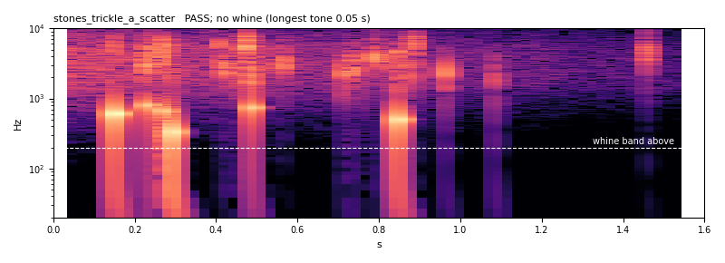
PASS · -26.0 LUFS · true peak -2.2 dBTP · ffmpeg reads the OGG at -25.8 LUFS · no whine (longest tone 0.05 s) · no steady low note
stones_trickle_b_slide — Slide
finer, denser grains build to a hush and fade, with a handful of bigger stones knocking through it. A bank giving way.
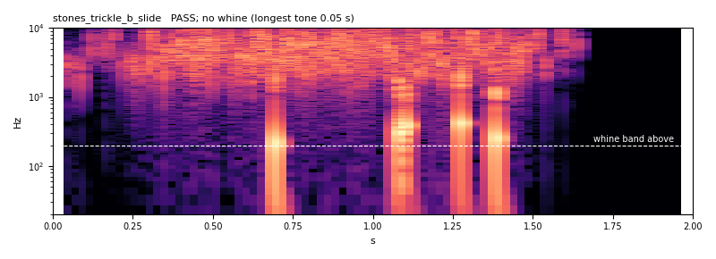
PASS · -26.0 LUFS · true peak -6.5 dBTP · ffmpeg reads the OGG at -26.4 LUFS · no whine (longest tone 0.05 s) · low note 213 Hz held 0.0 s, +18 dB
stones_crunch_a_tyre — Tyre
dense small grains with a crushing squash about nine times a second. A wheeled vehicle rolling onto gravel and off.
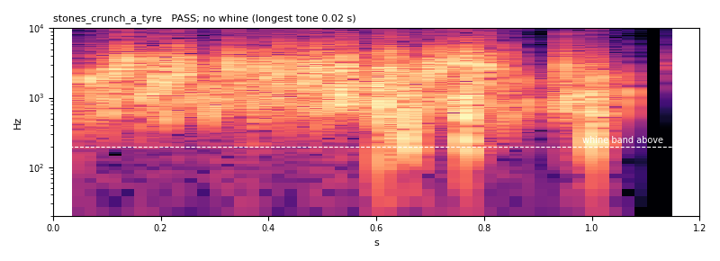
PASS · -26.0 LUFS · true peak -8.4 dBTP · ffmpeg reads the OGG at -26.3 LUFS · no whine (longest tone 0.02 s) · low note 67 Hz held 0.0 s, +14 dB
stones_crunch_b_heavy — Heavy
fewer, bigger stones with a low knock in each and a dull rumble under the lot. A loaded wheeled vehicle on coarse gravel.
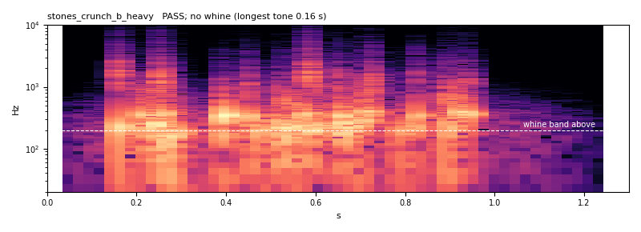
PASS · -26.0 LUFS · true peak -6.7 dBTP · ffmpeg reads the OGG at -26.0 LUFS · no whine (longest tone 0.16 s) · low note 41 Hz held 0.1 s, +11 dB
Bush and reed rustle as infantry pass
A disturber inside a bush or reed tile. One-shots, 1 s, heard once per pass.
rustle_a_bush — Bush
leafy hiss torn into a rough 25 Hz flutter, one swell, two or three twig snaps. A rifle squad pushing through scrub.
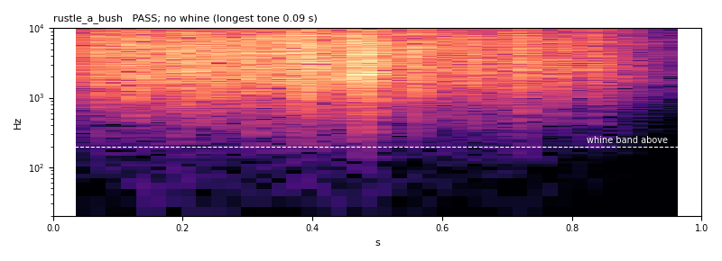
PASS · -26.0 LUFS · true peak -9.3 dBTP · ffmpeg reads the OGG at -25.7 LUFS · no whine (longest tone 0.09 s) · low note 40 Hz held 0.1 s, +6 dB
rustle_b_reed — Reed
a softer, higher swish in two lobes over a faint stalk friction. A man wading through tall reed.
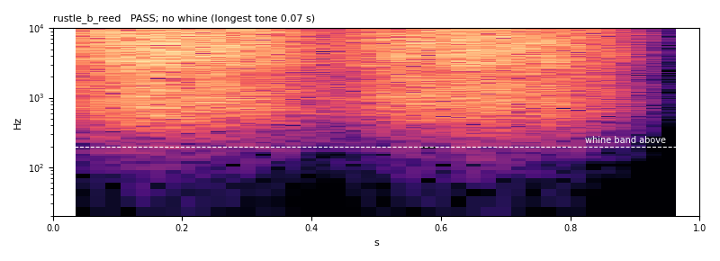
PASS · -26.0 LUFS · true peak -12.3 dBTP · ffmpeg reads the OGG at -26.0 LUFS · no whine (longest tone 0.07 s) · low note 165 Hz held 0.1 s, +11 dB
rustle_c_dry_brush — Dry brush
a crackle of tiny clicks, 160 a second at the peak, over a thin hiss. Dead scrub that snaps.
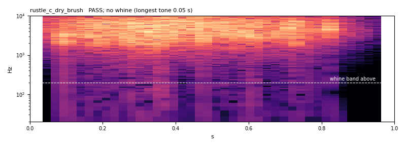
PASS · -26.0 LUFS · true peak -6.6 dBTP · ffmpeg reads the OGG at -25.8 LUFS · no whine (longest tone 0.05 s) · low note 30 Hz held 0.1 s, +12 dB
Water on wetland ~ clusters
Positional loops at the nearest few clusters on a wetland map. Seamless loops of 10.008 s, to be heard through the same distance and bearing as an engine loop. Let each run round.
water_a_lap — Lap
six soft waves a loop wash in and back over a low sheen, a few small plips. Still water at a reedy edge.
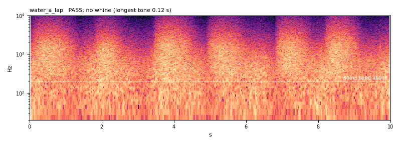
PASS · -26.0 LUFS · true peak -9.8 dBTP · seam 0.990, step 0.86 dB · ffmpeg reads the OGG at -26.3 LUFS · no whine (longest tone 0.12 s) · low note 47 Hz held 0.4 s, +8 dB · its own level moves 8.7 dB over 1 s windows
water_b_flow — Flow
a continuous rush with a turbulent 2-6 Hz boil, a hiss on top and about a hundred small bubbles. A ditch or a shallow stream.
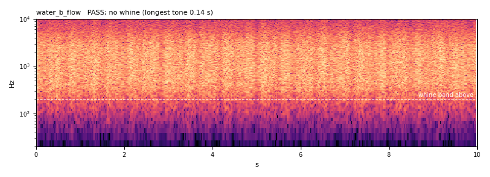
PASS · -26.0 LUFS · true peak -12.6 dBTP · seam 0.986, step 0.26 dB · ffmpeg reads the OGG at -26.3 LUFS · no whine (longest tone 0.14 s) · low note 112 Hz held 0.1 s, +9 dB · its own level moves 0.7 dB over 1 s windows
water_c_marsh_seep — Seep
a dark, slow slosh and a drip now and then; the quietest of the three. Black marsh water barely moving.
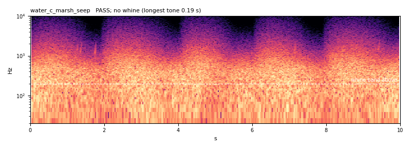
PASS · -26.0 LUFS · true peak -10.8 dBTP · seam 1.000, step 0.91 dB · ffmpeg reads the OGG at -26.2 LUFS · no whine (longest tone 0.19 s) · low note 47 Hz held 0.5 s, +9 dB · its own level moves 5.1 dB over 1 s windows
Wind bed that follows the gust
A 15 s seamless loop meant to sit under the visual gust: the game would ride its gain on the same sin² bump the grass and trees follow, so a gust you SEE is a gust you HEAR. So the bed itself should barely move. Each card has the bare loop and a 33 s preview with the gain following three gusts (gain 1 at rest to 1.6, about +4 dB, at a gust's peak, peaks at 1.25, 12.25 and 23.25 s).
wind_a_flat_bed — Flat bed
a low breath and a thin hiss with almost no swell of its own, so the game's gust gain does all the moving.
With the gain following the gust (33 s, not a loop):
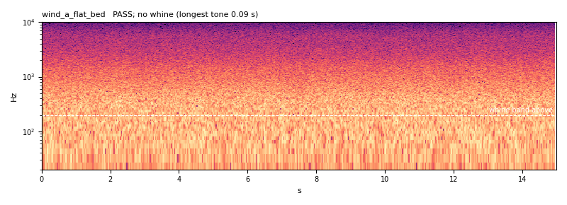
PASS · -26.0 LUFS · true peak -12.1 dBTP · seam 0.991, step 0.01 dB · ffmpeg reads the OGG at -26.2 LUFS · no whine (longest tone 0.09 s) · low note 53 Hz held 0.5 s, +8 dB · its own level moves 1.1 dB over 1 s windows
wind_b_airy_foliage — Airy
wind through foliage; a mid-band rush and a leafy 3-8 kHz hiss that flutters at 3-6 Hz. Reads as the grass and trees moving.
With the gain following the gust (33 s, not a loop):
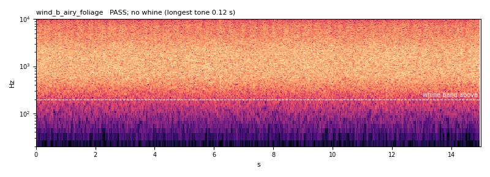
PASS · -26.0 LUFS · true peak -14.9 dBTP · seam 0.997, step 0.05 dB · ffmpeg reads the OGG at -26.2 LUFS · no whine (longest tone 0.12 s) · low note 54 Hz held 0.2 s, +8 dB · its own level moves 0.9 dB over 1 s windows
wind_c_low_exposed — Low and exposed
dark, mostly under 800 Hz, a slow 3-8 cycle breathing at 6%. Open ridge or a bare plain.
With the gain following the gust (33 s, not a loop):
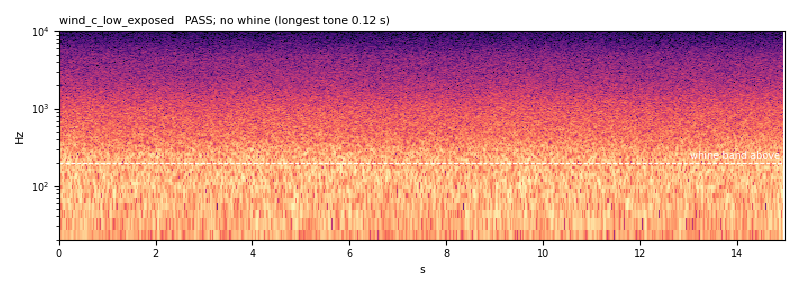
PASS · -26.0 LUFS · true peak -10.8 dBTP · seam 0.998, step 0.45 dB · ffmpeg reads the OGG at -26.1 LUFS · no whine (longest tone 0.12 s) · low note 44 Hz held 0.7 s, +9 dB · its own level moves 1.7 dB over 1 s windows
How it was made
- Stones: a Poisson process of pebbles (a rate profile, inverted from its cumulative sum at sorted uniform draws), each a short noise burst through one band with a fast attack and a decay a quarter of its length; bigger stones add a 5 to 8 ms damped sine (a knock, never a held note). The crunch adds a wide 'squash' burst about nine times a second, or a low rumble under it.
- Rustle: band noise multiplied by the rough on-off of |low-passed noise| (leaves), under one or two swells; the reed is two lobes of a higher band; the dry brush is a crackle of tiny clicks.
- Water: whole-cycle swells on band noise (so the loop is periodic), washes placed on the loop's circle, and short rising sine glides (10 to 50 ms) for bubbles, plips and drips.
- Wind: low-passed noise with 3 to 7% swell of its own, so a gain from outside does the moving. The airy bed adds a 3 to 8 kHz hiss fluttering at 3 to 6 Hz.
- Filters are the engines' circular ones for loops, so a loop's end is the start of the next.
How it was checked
The meters and the whine detector are the engines' own (../engines/engine_candidates.py, imported). Pass means: integrated loudness within 0.5 LU of -26, true peak at or under -6 dBTP (a loop, the beds' ceiling) or -1 dBTP (a one-shot, gen_audio's 0.89 peak), no whine (a spectral peak 10 dB over its ±161 Hz neighbourhood, 200 Hz to 8 kHz, held 1 s or longer), and for a loop a seam with spectral correlation of 0.9 or more, no click and validate:audio's own 250 ms level step and gap. A loop's length is a whole number of 1024-sample frames. Each check was first shown an input built to fail it:
- K-weighting = BS.1770-4 table at 48 kHz: max coefficient error 8.9e-16 ✓
- 997 Hz sine at -20 dBFS meters -23.01 LUFS: -23.01 LUFS ✓
- same, then 5 s at -40 dBFS: gated out, -23.14: -23.14 LUFS ✓
- fs/4 sine, 45 deg off crest: 0.0 dBTP: +0.02 dBTP (sample peak -3.01) ✓
- pure 440 Hz tone, 3 s: WHINE: 440 Hz for 2.93 s, 71 dB over its neighbours ✓
- 440 Hz 3 s under pink noise: WHINE: 440 Hz for 2.93 s, 13 dB ✓
- 440 Hz for 0.4 s in pink noise: clean: longest 0.46 s ✓
- white noise: clean: longest 0.09 s ✓
- pink noise: clean: longest 0.09 s ✓
- loop that starts dark and ends bright: seam FAILS: corr -0.91, step 0.27 dB ✓
- loop whose ends do not meet: seam FAILS: click 4.2x ✓
- periodic noise loop: seam passes: corr 0.996, click 0.29x, step 0.25 dB ✓
- poisson_times: 100/s for 10 s gives about 1000 events: 1060 events ✓
- poisson_times: a zero rate gives none: 0 events ✓
- a 120.25-cycle loop clicks at the wrap, a 120-cycle loop does not: click 33.8 vs 0.38 ✓
- wander_db: steady noise < 1 dB, a +-80% swell > 6 dB: 0.09 / 16.7 dB ✓
- gust_gain: 1 at 0, 2.5 and 5 s; the peak at 1.25 and 12.25 s: [1. 1.6 1. 1. 1.6] ✓